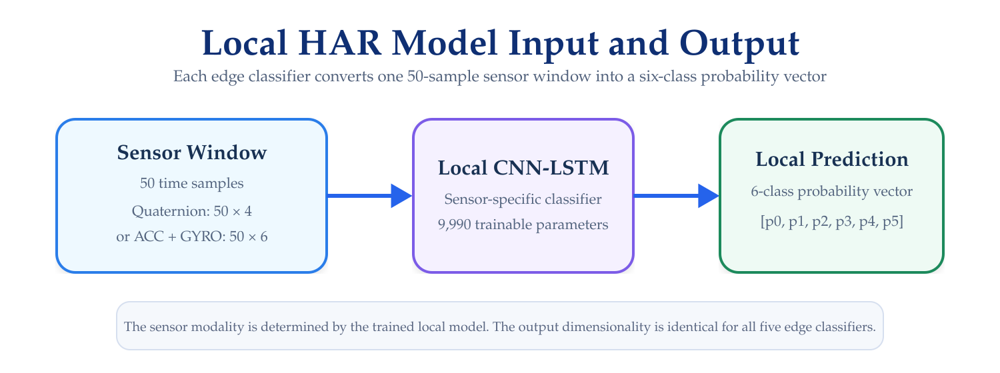
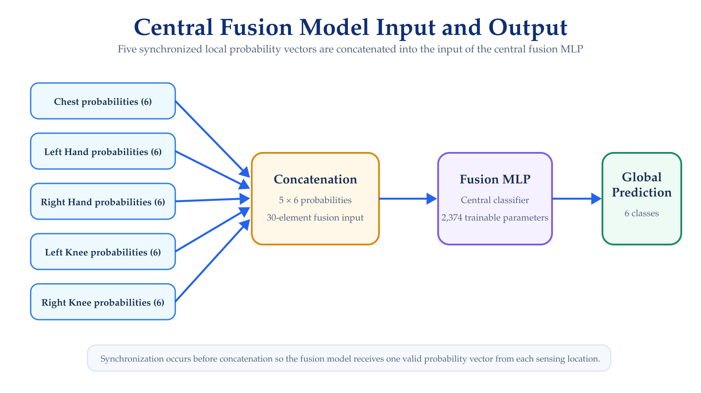
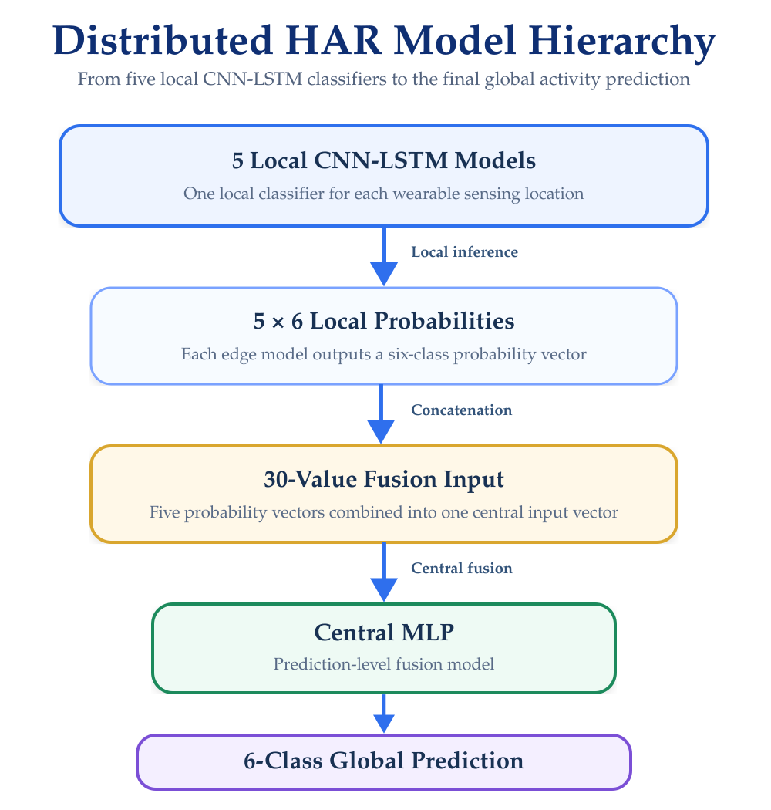

Models & Data
Sensor Inputs, Windowing, and HAR Models
The HAR Distributed Framework uses sensor-specific neural networks at the edge and a prediction-level fusion model at the central node.
This section defines the data representations, activity classes, input windows, local HAR models, and central fusion model used by the framework.
Activity Classes
The framework recognizes six activities.
| Class ID | Activity |
|---|---|
| 0 | Sitting |
| 1 | Folding Clothes |
| 2 | Sweeping |
| 3 | Walking |
| 4 | Moving Boxes |
| 5 | Riding a Bike |
All local classifiers and the central fusion model therefore produce six output probabilities.
A prediction vector has the form:
[p0, p1, p2, p3, p4, p5]where each element represents the confidence associated with one activity class.
Sensor Representations
The local HAR models operate on two types of sensor representations.
Accelerometer and Gyroscope
Nodes configured for inertial motion data use:
ax, ay, az, gx, gy, gz
where:
ax,ay, andazrepresent tri-axial acceleration; andgx,gy, andgzrepresent tri-axial angular velocity.
The resulting input contains:
6 channels
Quaternion Orientation
Nodes configured for orientation information use:
w, x, y, z
The resulting input contains:
4 channels
The input modality must match the model deployed on the corresponding edge node.
A model trained with quaternion inputs cannot be used directly with an accelerometer–gyroscope input, and vice versa.
Sampling and Windowing
The real-time framework operates at a nominal sampling rate of:
50 Hz
Sensor measurements are grouped into windows containing:
50 samples
which corresponds to approximately:
1 second
of sensor data.
Therefore, depending on the sensor representation, a local model receives one of the following input structures:
| Representation | Window | Channels | Input Size |
|---|---|---|---|
| Quaternion | 50 samples | 4 | 50 × 4 |
| Accelerometer + Gyroscope | 50 samples | 6 | 50 × 6 |
The real-time inference pipeline processes complete 50-sample windows before generating a new local prediction.
Offline and Real-Time Windowing
The dataset preparation and real-time deployment use the same fundamental window length but differ in how windows are generated.
Offline Processing
During offline dataset preparation, windows use:
Window size: 50 samples
Stride: 25 samplesThis introduces overlap between consecutive samples used for model development and evaluation.
Real-Time Processing
During real-time execution, each edge node accumulates incoming measurements until a complete 50-sample window is available for inference.
The resulting window is then converted into the tensor representation expected by the corresponding local model.
Local HAR Models
Each edge node executes a sensor-specific CNN-LSTM classifier.
The relationship between one sensor window and the local prediction is illustrated in Figure 1.

The local CNN-LSTM architecture combines:
- Convolutional processing for feature extraction from the sensor sequence
- Recurrent processing for temporal modeling
Each local classifier contains:
9,990 trainable parametersand produces:
6 output probabilitiesregardless of whether the input representation contains four or six channels.
Distributed Model Organization
The distributed implementation contains five local inference branches:
| Local Model | Sensing Location | Output |
|---|---|---|
| Chest Model | Chest | 6 probabilities |
| Left Hand Model | Left hand | 6 probabilities |
| Right Hand Model | Right hand | 6 probabilities |
| Left Knee Model | Left knee | 6 probabilities |
| Right Knee Model | Right knee | 6 probabilities |
Each local output represents an independent estimate of the current activity based on information available at that sensing location.
The local classifier output is transmitted to the central node rather than transmitting the complete raw sensor window.
Prediction-Level Fusion
The central node combines the outputs generated by the five local classifiers.
Each edge model provides:
6 probabilitiesWith five edge nodes, the fusion input therefore contains:
5 × 6 = 30 valuesThe complete fusion process is illustrated in Figure 2.

The fusion input can be represented conceptually as:
[
Chest probabilities,
Left Hand probabilities,
Right Hand probabilities,
Left Knee probabilities,
Right Knee probabilities
]forming a 30-element input vector.
Central Fusion Model
The central classifier is implemented as a Multilayer Perceptron (MLP).
Its role is not to process raw inertial measurements.
Instead, it learns how to combine the class-confidence information generated independently by the five local CNN-LSTM classifiers.
The fusion model contains:
2,374 trainable parametersand generates the final six-class probability distribution used by the framework. The complete distributed model hierarchy is illustrated in Figure 3.

Why Prediction-Level Fusion Is Used
The distributed architecture performs feature extraction and local classification close to the wearable sensors.
Consequently, the central node receives compact prediction vectors instead of continuously receiving full raw sensor windows.
This separates the system into two inference levels:
| Level | Input | Model | Output |
|---|---|---|---|
| Edge | Sensor window | Local CNN-LSTM | 6 probabilities |
| Central | Five local probability vectors | Fusion MLP | 6 probabilities |
Communication and synchronization of these prediction vectors are documented under Communication & Synchronization.
Model Loading
During execution, each edge node must load the trained model corresponding to its sensor configuration.
The central node must similarly load the trained fusion model.
The runtime configuration must therefore preserve consistency among:
- Sensing Location
- Sensor Representation
- Expected Number Of Input Channels
- Model Architecture
- Trained Model Parameters
A valid PyTorch model file is not sufficient by itself.
The model definition instantiated at runtime must match the architecture used when the trained parameters were saved.
The actual startup and model-loading commands are documented under Running the Framework.
Input and Output Summary
The complete inference structure can be summarized as follows:
| Component | Input | Output |
|---|---|---|
| Quaternion local model | 50 × 4 |
6 probabilities |
| ACC + GYRO local model | 50 × 6 |
6 probabilities |
| Central fusion MLP | 30 probabilities |
6 probabilities |
Data Flow Across the Framework
The responsibilities documented across the framework are separated intentionally:
- Wearable Sensor Setup — physical sensing and BLE connectivity;
- Edge Nodes — acquisition, buffering, input preparation, and local inference;
- Models & Data — window dimensions, channels, classes, and neural models;
- Communication & Synchronization — transport and temporal coordination of predictions;
- Central Node — system-level processing and global inference.
Verification
When modifying or replacing a model, verify:
- The expected number of input channels
- The 50-sample window dimension
- The class ordering
- The output dimension
- The model architecture
- The trained parameter file
- Compatibility with the deployed PyTorch environment.
For a local model, the final output should contain:
6 probabilitiesFor the central fusion model, the input should contain:
30 probability valuesand its output should again contain:
6 probabilitiesNext Step
The core implementation of the distributed framework is now defined.
Continue with:
The next section describes how to start the complete system, including the central services, edge nodes, wearable acquisition, distributed inference, and visualization components.